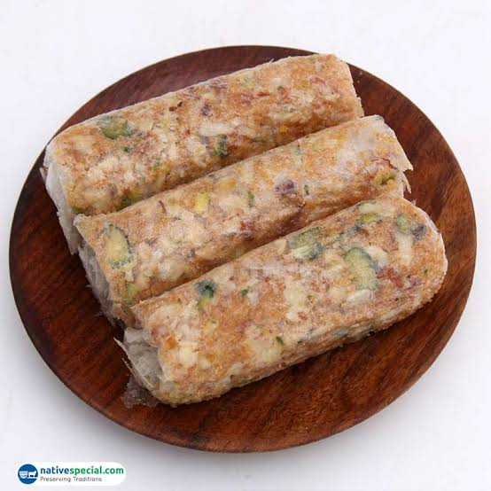
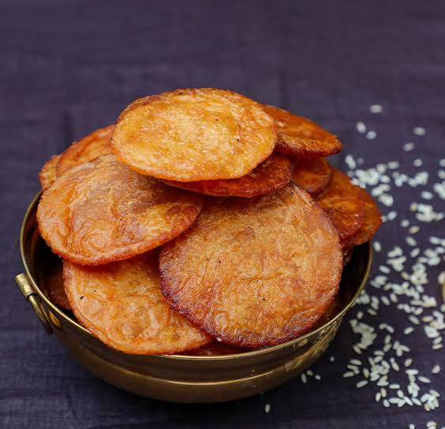
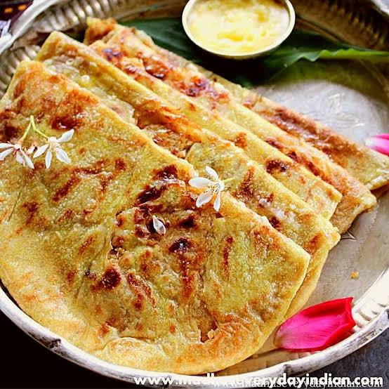
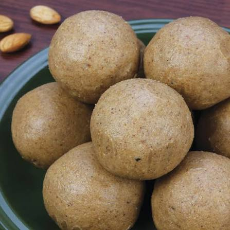
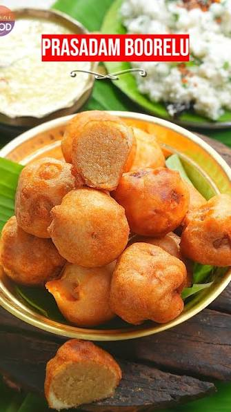
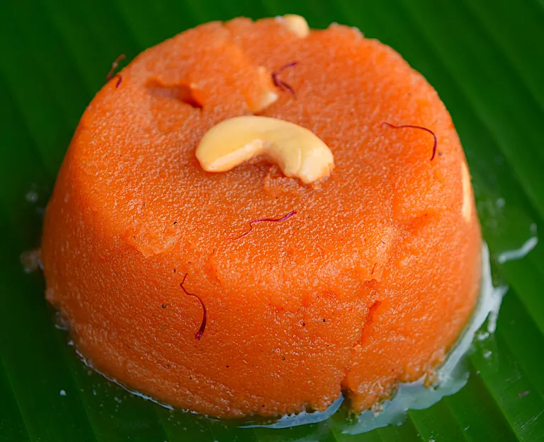
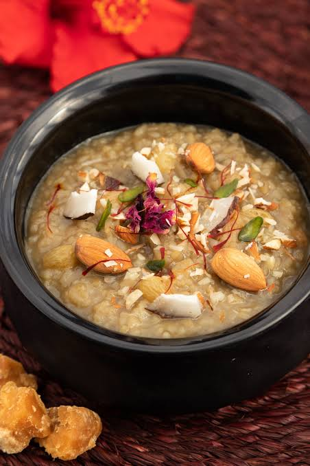
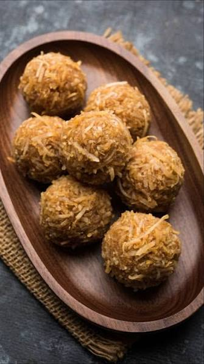

Pootharekulu is prepared using 10 rice starch sheets (pootharekulu sheets), 1 cup of powdered jaggery or powdered sugar, ½ cup of ghee, and ¼ cup of finely chopped almonds, cashews, or pistachios (optional).
Place a rice starch sheet on a clean surface and spread a thin layer of ghee evenly over it. Sprinkle powdered jaggery or sugar generously, followed by the chopped nuts if desired. Fold the sheet carefully into a roll or rectangle and brush with a little more ghee. Repeat the process for the remaining sheets and serve as a traditional Andhra sweet.

Ariselu is made using 2 cups of freshly ground rice flour, 1½ cups of grated jaggery, ¼ cup of water, 2 tablespoons of sesame seeds, 1 tablespoon of ghee, and oil or ghee for frying.
Prepare a jaggery syrup by heating jaggery with water until it reaches a soft-ball consistency. Gradually mix in the rice flour to form a soft dough and allow it to cool slightly. Add sesame seeds and knead well. Shape small portions into flat discs and deep fry until golden brown. Press gently to remove excess oil and serve warm or at room temperature.

Bobbatlu is prepared using 2 cups of all-purpose flour, 1 cup of chana dal, 1 cup of grated jaggery, ½ teaspoon of cardamom powder, 2 tablespoons of ghee, a pinch of turmeric, a pinch of salt, and oil for rolling.
Cook the chana dal until soft and drain the excess water. Mash the dal and cook it with jaggery until thick, then mix in the cardamom powder to prepare the filling. Knead the flour with turmeric, salt, water, and a little oil into a soft dough. Stuff each dough ball with the sweet filling, roll it gently into a thin flatbread, and cook on a hot griddle with ghee until both sides turn golden. Serve warm.

Sunnundalu is made using 2 cups of roasted urad dal flour, 1 cup of powdered jaggery or sugar, ½ cup of melted ghee, and 2 tablespoons of chopped cashews (optional).
Roast the urad dal until aromatic and grind it into a fine powder if not already prepared. Mix the roasted flour with powdered jaggery or sugar and chopped cashews. Gradually add melted ghee while mixing until the mixture holds together. Shape it into small round laddus and allow them to cool before serving.

Boorelu is prepared using 1 cup of chana dal, 1 cup of grated jaggery, ½ teaspoon of cardamom powder, 1 cup of soaked rice, ¼ cup of soaked urad dal, a pinch of salt, and oil for deep frying.
Cook the chana dal until soft and combine it with jaggery and cardamom powder to prepare the sweet filling. Grind the soaked rice and urad dal into a smooth batter. Shape the filling into small balls, dip each ball into the batter, and deep fry until golden brown and crisp. Drain excess oil and serve warm.

Ravva Kesari is prepared using 1 cup of semolina (rava), 2½ cups of water, ¾ cup of sugar, ¼ cup of ghee, ¼ teaspoon of cardamom powder, a few saffron strands (optional), and roasted cashews and raisins.
Heat ghee in a pan and roast the cashews and raisins until golden, then set them aside. Roast the semolina in the remaining ghee until aromatic. Boil water separately and gradually add the roasted semolina while stirring continuously. Once cooked, add sugar, cardamom powder, and saffron, and mix until thick. Garnish with roasted cashews and raisins before serving.

Paramannam is made using 1 cup of rice, 4 cups of milk, ¾ cup of grated jaggery, 2 tablespoons of ghee, ¼ teaspoon of cardamom powder, a few cashews, a few raisins, and a pinch of edible camphor (optional).
Cook the rice in milk until soft and creamy. Melt the jaggery separately with a little water and strain if necessary before adding it to the cooked rice. Stir well and cook for a few minutes. Add cardamom powder and edible camphor if desired. Fry the cashews and raisins in ghee, add them to the sweet pongal, and serve warm.

Kobbari Louz is prepared using 2 cups of freshly grated coconut, 1½ cups of sugar, ¼ cup of milk, 2 tablespoons of ghee, ¼ teaspoon of cardamom powder, and chopped pistachios or almonds for garnish.
Combine the grated coconut, sugar, and milk in a heavy-bottomed pan and cook on medium heat while stirring continuously. Add the ghee and continue cooking until the mixture thickens and starts leaving the sides of the pan. Mix in the cardamom powder, spread the mixture evenly onto a greased tray, and garnish with chopped nuts. Allow it to cool completely before cutting it into square or diamond-shaped pieces and serving.
